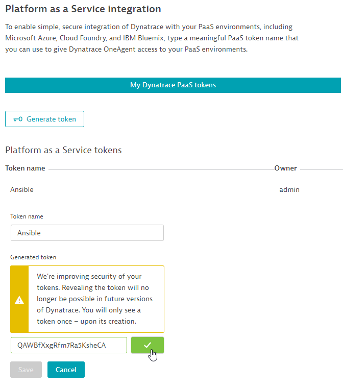
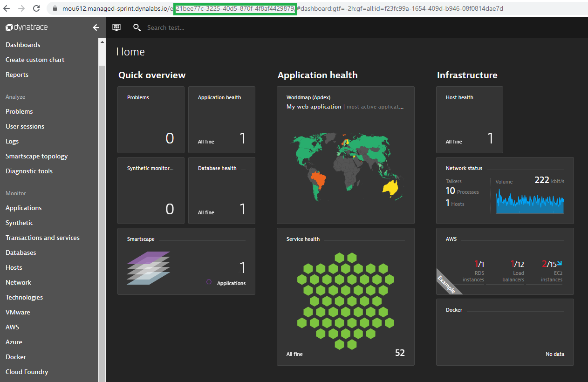
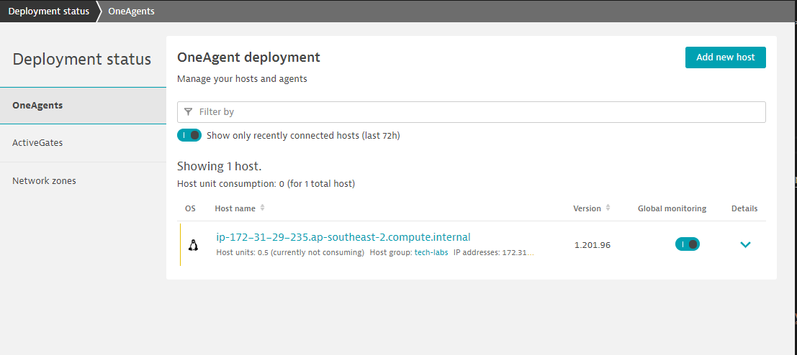
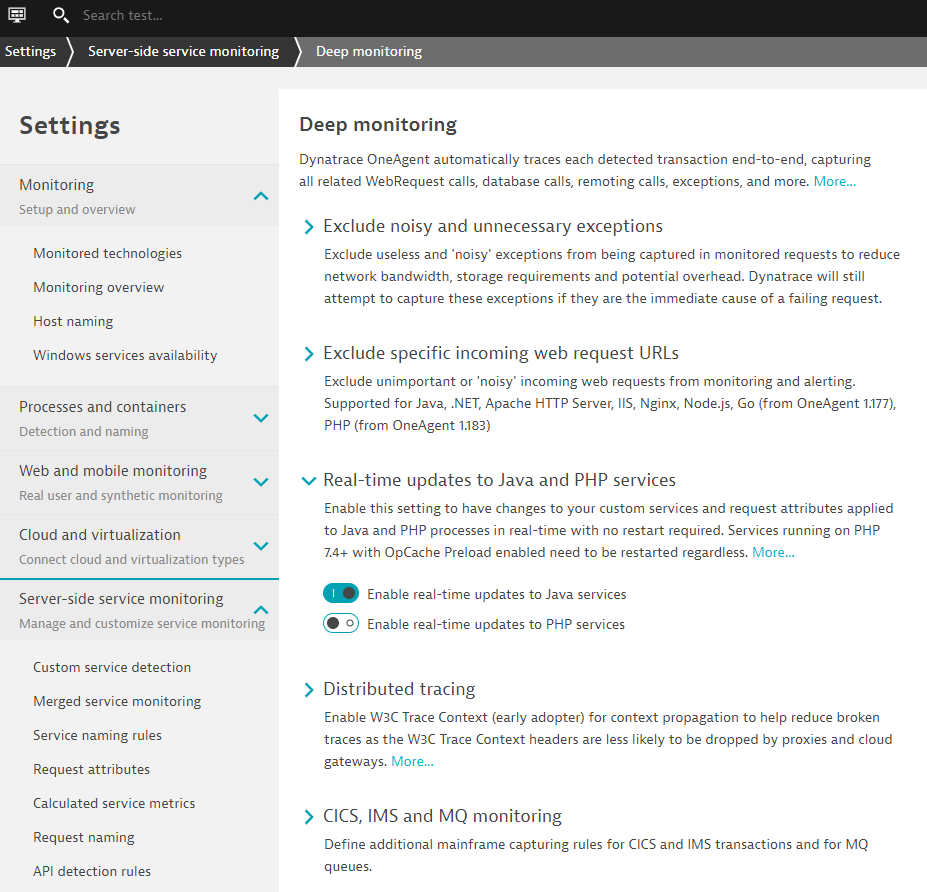
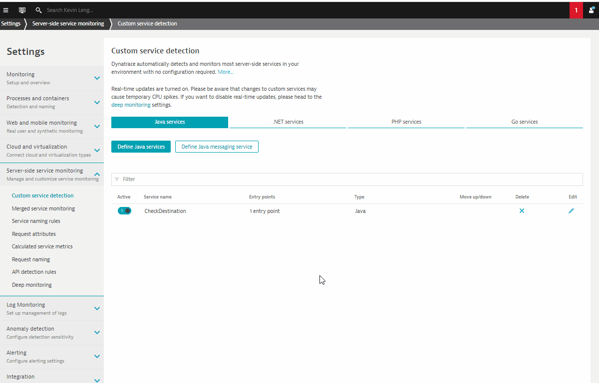
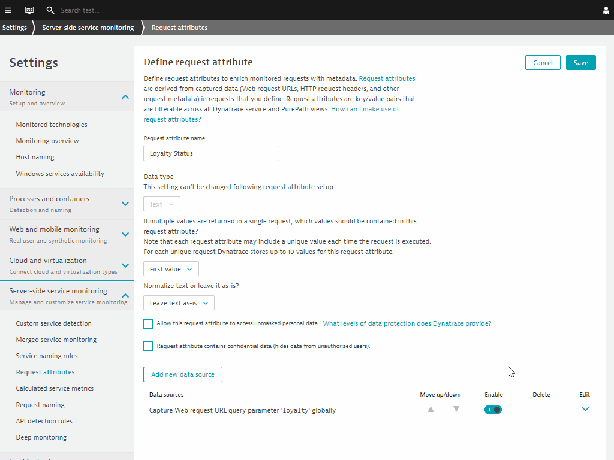
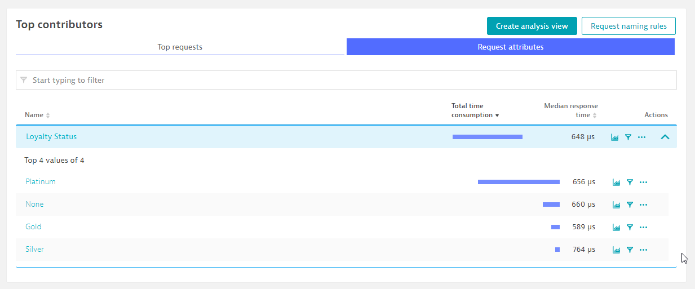
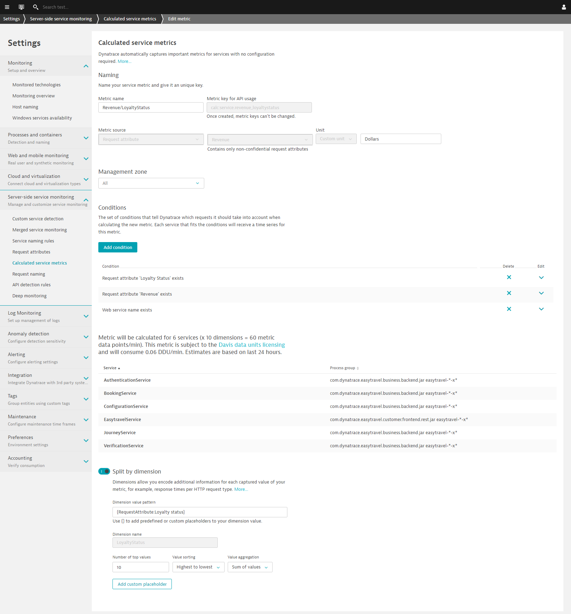

このリポジトリには、Advanced Observability Workshopのハンズオンが含まれています。
事前準備
セットアップ
このラボでは、以下のサンプルアプリケーションを使用します。
- サンプルアプリケーション
学習内容
- Ansible CLIを使用したOneAgentのインストール
- コードレベルの詳細なキャプチャのための「リクエスト属性」について
- 高度なダッシュボードのためのセッション・プロパティ
- すべてのエンティティのベースラインを自動化するためのメトリクス・インジェスチョンについて
この演習では、Ansible を使って OneAgent を Linux インスタンスにデプロイします。
Dynatrace Ansible Github をベースにしています。Dynatrace Oneagentは、LinuxやWindowsなどのOS上で、さまざまな構成で簡単に展開することができ、OneAgentサービスが確実に稼働する状態を維持します。また、さまざまなOneAgent構成ファイルを操作するためのタスクも用意されています。
Ansible example を参考に, ホストにインストールします。 その他のAnsibleプレイブックの例は以下の通りです。 here
Ansibleのインストール
以下のコマンドを使用して、Linux ホストに Ansible をセットアップします。
wget -O- https://raw.githubusercontent.com/Dynatrace-APAC/Workshop-Advanced-Observability/master/setup_ansible.sh | bash
Positive:完了したら、次のコマンドを実行してansibleの状態を確認します。 ansible --version
依存関係にあるものと一緒にインストールされていることを確認してください。
ansible 2.9.13
config file = /etc/ansible/ansible.cfg
configured module search path = [u'/home/advanced-observability-workshop/.ansible/plugins/modules', u'/usr/share/ansible/plugins/modules']
ansible python module location = /usr/lib/python2.7/dist-packages/ansible
executable location = /usr/bin/ansible
python version = 2.7.17 (default, Jul 20 2020, 15:37:01) [GCC 7.5.0]
Ansibleプレイブックのダウンロード
以下のコマンドを使用して、Linux ホストに Ansibleプレイブックをダウンロードします。
wget https://raw.githubusercontent.com/Dynatrace-APAC/Workshop-Advanced-Observability/master/dt-oneagent-install-linux.yml
more dt-oneagent-install-linux.yml というコマンドを使うと、このファイルを調べて、提供する必要のある変数をプレビューすることができます。今回の実習では、Ansible を使用して 1 台のホスト上で展開することにします。しかし、実際には、複数のホストや環境でプレイブックを実行することができます。
# dynatrace oneagent install on linux
# hosts_group -> inventory group of hosts to execute playbook on
# dt_api_endpoint -> dynatrace environment api endpoint (include trailing /)
# dt_api_token -> dynatrace api install token
# dt_host_group -> dynatrace host group name
# dt_app_log_content_access -> flag to enable or disable log analytics on host (0 or 1)
# dt_infra_only -> flag to set cloud infrastructure monitoring mode on host (0 or 1)
---
-
hosts: localhost
name: "dynatrace oneagent install on linux"
tasks:
-
name: "validate ansible execution on linux with sudo access"
shell:
cmd: ls /opt
become: yes
changed_when: False
# Check the latest available OneAgent version
-
PaaSトークンの作成
Settings > Integration > Platform as a Serviceを開きます。
Generate token をクリックし、トークン名 （Ansible）を入力します。
Generate をクリックし copy ボタンをクリックする。

プレイブックの実行
以下のコマンドを使用して、dt_api_tokenおよびdt_api_endpoint変数に変更を加えます。このコマンドは、メモ帳などのテキストエディタで編集することができます。
EXAMPLE
ansible-playbook \
-e dt_api_token=<PAAS-TOKEN> \
-e dt_host_group=tech-labs \
-e dt_app_log_content_access=1 \
-e dt_infra_only=0 \
-e dt_api_endpoint=https://mou612.managed-sprint.dynalabs.io/e/<DT-ENV>/api/v1/ \
dt-oneagent-install-linux.yml
コマンドをターミナルウィンドウに貼り付け、dt_api_tokenとdt_api_endpointの変数を調整してください。は、先ほどコピーしたトークンと置き換えてください。ブラウザからDynatrace環境内でを取得することができます。

出力例
PLAY [dynatrace oneagent install on linux] ********************************************************************************************************************
TASK [Gathering Facts] ****************************************************************************************************************************************
ok: [localhost]
TASK [validate ansible execution on linux with sudo access] ***************************************************************************************************
ok: [localhost]
TASK [get latest oneagent version from dynatrace environment api] *********************************************************************************************
ok: [localhost]
TASK [set oneagent latest version fact (dt_latest_version)] ***************************************************************************************************
ok: [localhost]
TASK [check if oneagent is already installed] *****************************************************************************************************************
ok: [localhost]
TASK [check installed oneagent version] ***********************************************************************************************************************
skipping: [localhost]
TASK [set oneagent current version fact (dt_current_version)] *************************************************************************************************
skipping: [localhost]
TASK [debug output current version] ***************************************************************************************************************************
skipping: [localhost]
TASK [debug output latest version] ****************************************************************************************************************************
ok: [localhost] => {
"dt_latest_version": "1.201.96.20200911-082031"
}
TASK [download oneagent install file] *************************************************************************************************************************
[DEPRECATION WARNING]: Supplying `headers` as a string is deprecated. Please use dict/hash format for `headers`. This feature will be removed in version 2.10.
Deprecation warnings can be disabled by setting deprecation_warnings=False in ansible.cfg.
ok: [localhost]
TASK [install: execute oneagent install file with root privileges] ********************************************************************************************
changed: [localhost]
TASK [update: execute oneagent install file with root privileges] *********************************************************************************************
skipping: [localhost]
TASK [validate oneagent installation] *************************************************************************************************************************
ok: [localhost]
TASK [check host group is correct] ****************************************************************************************************************************
ok: [localhost]
TASK [set current host group fact (dt_current_host_group)] ****************************************************************************************************
ok: [localhost]
TASK [update/correct host group setting if not correct] *******************************************************************************************************
skipping: [localhost]
PLAY RECAP ****************************************************************************************************************************************************
localhost : ok=11 changed=1 unreachable=0 failed=0 skipped=5 rescued=0 ignored=0
インストールの検証
左側のナビゲーションにあるDeployment statusにアクセスします。現在のホストにOneAgentがインストールされていることが確認できます。

ほとんどの実例のように、Dynatraceがすでに自動的にアプリケーションをインスツルメンテーションしていることがわかります。しかし、深いコードレベルの可視性を得るためには、これらのサービスを再起動する必要があります。
サンプルアプリケーションの再起動
以下のコマンドを実行して、サンプルアプリケーションEasytravelを再起動します。
./restart_easyTravel.sh
Smartscapeの探索
Easy Travelが起動するのを待っている間、Dynatraceを探索し、Smartscapeを使って、DynatraceがEasy Travelアプリケーションを構成するプロセスと依存関係を自動的に発見することができます。
4 things ではDynatraceの魅力を紹介しています。

この演習では、カスタムJavaサービスを作成します。これは、Dynatraceが監視しているが、自動的には計測していないサードパーティのアプリケーションやプロプライエタリなソフトウェアの典型的なケースです。
Javaのリアルタイム・アップデートを有効にする
Settings > Server-side service monitoring > Deep Monitoring > Real-time updatesを開きます。

Settings > Server-side service monitoring > custom service detectionを開きます。
Define Java servicesをクリックし、以下のように設定する。
- Name - Credit Card Verification
- Click on Find entry point
- Select com.dynatrace.easytravel.business.backend.jar
- Search for ipc.SocketNativeApplication
- Use selected class
- Select sendAndReceive method
- Select Finish
- Click on Save

この演習では、「リクエスト属性」の設定について説明します。リクエスト属性は、ユーザーとアプリケーションとのやり取りの詳細を把握するために利用されます。
リクエスト属性の作成
Settings > Server-side service monitoring > Request Attributesを開きます。
Define a new request attributeをクリックし、以下のように設定する。
- Request attribute source – Java method parameter(s)
- Click on Select method sources
- Select business.backend
- Search for BookingService
- Select Use the selected class
- Search for checkLoyaltyStatus
- Choose 2:java.lang.String on Capture Drop down
- Click on Save

ロイヤリティ・ステータス要求属性の検証
Transactions and servicesを開き、AuthenticationServiceをフィルタリングする。
View requestsをクリックし、Request AttributeタブのLoyalty Statusのキーと値のペアを検証してください。

この演習では、リクエスト属性を用いたCalulated Service Metricsの設定について説明します。これらを活用することで、ユーザーのアプリケーションに対するインタラクションのすべての詳細を把握することができます。
算出されたサービスメトリクスの定義
Settings > Server-side service monitoring > Calculated service metricsを開きます。
Create new metricをクリックし、以下のように設定する。
- Metric name – Revenue/LoyaltyStatus
- Metric source – Request Attribute
- Request Attribute – Revenue
- Unit - Custom unit
- Text field - Dollars
- Conditions - Request Attribute ‘Loyalty Status' exists
- Conditions - Request Attribute ‘Revenue' exists
- Conditions - Web service name exists
- Toggle - Spilt by dimension
- Dimension value pattern - {RequestAttribute:LoyaltyStatus}
- Dimension name - LoyaltyStatus
定義されたサービス間で様々なディメンションをプレビューできるようになります。

左のナビゲーションバーを参照し、「ダッシュボード」に進みます。Dynatraceには、Application Performance ReportやReal User Monitoringといったダッシュボードのテンプレートがあらかじめ用意されています。

それぞれのダッシュボードにドリルダウンして、アプリオーナーやビジネスユーザー向けの様々なダッシュボードウィジェットをご覧いただけます。

このラボを楽しんでいただき、お役に立てれば幸いです。ご意見、ご感想をお待ちしております。